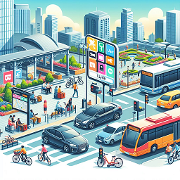

Realistic Transport Simulation: Tackling the Small Data Challenge with Open Data

Traffic Study of Shared Micromobility Services by Transportation Simulation
Potential Benefits of Increased Public Transit Ridership in Medium Sized Cities: A Case Study
Realistic Urban Traffic Simulation with Ride-Hailing Services: A Revisit to Network Kernel Density
Estimation
Operational Impacts of On-Demand Ride-Pooling Service Options in Birmingham, AL

Quantifying the Impact of Transportation Network Companies on Urban Congestion at a Medium Sized
City